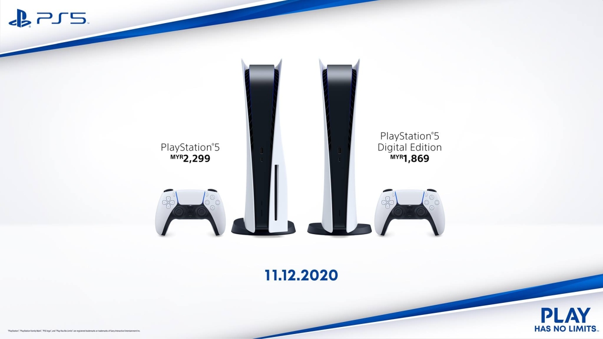

AVAILABILITY
The worldwide releases of these consoles actually vary depending on the region which is a very weird decision as they happen to be the most hyped up pieces of tech every 6-7 years. So, you would expect they will be released everywhere right? Well, the world just doesn’t work like that sadly, and reality is often disappointing.

The PS5 gets released almost everywhere and it is no exception here in Malaysia. Sony just recently released the price of the PS5 as of the time this was written and they are actually very reasonable, even though they are a bit more expensive compared to if you bought them in US Dollars. There are two versions of the PS5, which are the normal version and retails for RM 2,299 and the Digital Edition which is the cheaper between the two which retails at RM 1,869.
The difference between the two is basically just the Digital Edition doesn’t have a disk drive. With that being said, Malaysians will have to wait a little while as it is still in pre order phase and it is expected that the locals will be able to get their hands on the system on the 11th of December 2020 nationwide in selected retail stores. Though, people need to be on edge and make sure they order it early as these things are very popular and are selling like hotcakes.
As for the Xbox Series-X, it is not making any official releases here in Malaysia and Microsoft is not planning to do so any time soon. Unlike Sony, the Xbox is not really focusing on the Asian markets and is only releasing in selected markets only which is a major bummer. To be honest, this is something that is expected and is seen coming as previous generations of the Xbox never did release in Malaysia for some odd reason. With all this in mind, I still hoped that they would change things up this time around, but I guess they didn’t bother at all.
It is a shame as the Xbox is a powerful device and could really take off here in the Malaysian market as they would provide competition to the currently dominating Sony PlayStation. If Malaysians really want the latest Xbox, then they would have to import it from another country and luckily, they can get it from our neighbours, which is Singapore as it is released officially there.
It is noted that Xbox also released two versions of their consoles which is the Series-X and the Series-S. The X is the flagship and has all the bells and whistles while the S is the less powerful version of the X while also being a little cheaper. The Series-X is $699 SGD and the Series-S is $459 SGD which is roughly RM 2,130 and RM 1,400 respectively when converted.
In conclusion, these consoles are very competitive as with every new generational release have been before this and it is no different this time around. For which either one you go for, you will have a great experience regardless. The only thing that poses a problem is availability. Sony has no problems and it is only the Xbox’s side of things is a bit of a lengthy process if you ever want to get it anyway. Setting all things aside, our discussion and comparison ends here and I hope that you found this article to be helpful in choosing your next gaming console to put in your living room. Everything from here onwards is up to you to decide, and the ultimate question is, which side are you on?